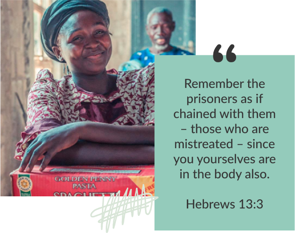
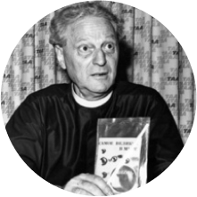

We believe the Bible to be the inspired, the only infallible, authoritative Word of God.
WHAT WE DO
Our ministry is to help, love and encourage persecuted Christians by providing Bibles, ministry resources, medical aid and practical assistance.
Our ministry is inspired by Hebrews 13:3: “Remember the prisoners as if chained with them – those who are mistreated – since you yourselves are in the body also.”
We support Christians who are or have been persecuted for their faith and involvement in spreading the Gospel of Jesus Christ in a hostile environment. We give their testimony a voice, informing and mobilising Christians in Australia to stand with their persecuted brothers and sisters in Christ.
We believe that the lives and testimony of persecuted Christians is a vital part of the fellowship of all believers and can challenge and strengthen the faith of God’s people everywhere.

OUR STORY

Richard wrote Tortured for Christ
In 1967, Richard wrote Tortured for Christ, a firsthand account of the brutality he and other Christians suffered under communism. It opened the eyes and hearts of Christians in Western countries who had never heard of the terrible persecution happening to believers living in communist nations. He wrote: “The message I bring from the underground church is:‘Don’t abandon us! Don’t forget us! Don’t write us off! Give us the tools we need! We will pay the price for using them!’”
Richard’s call to ‘remember the persecuted’ led to the establishment of an international ministry to persecuted Christians.
Richard wrote Tortured for Christ
In 1967, Richard wrote Tortured for Christ, a firsthand account of the brutality he and other Christians suffered under communism. It opened the eyes and hearts of Christians in Western countries who had never heard of the terrible persecution happening to believers living in communist nations. He wrote: “The message I bring from the underground church is:‘Don’t abandon us! Don’t forget us! Don’t write us off! Give us the tools we need! We will pay the price for using them!’”
Richard’s call to ‘remember the persecuted’ led to the establishment of an international ministry to persecuted Christians.
Richard wrote Tortured for Christ
In 1967, Richard wrote Tortured for Christ, a firsthand account of the brutality he and other Christians suffered under communism. It opened the eyes and hearts of Christians in Western countries who had never heard of the terrible persecution happening to believers living in communist nations. He wrote: “The message I bring from the underground church is:‘Don’t abandon us! Don’t forget us! Don’t write us off! Give us the tools we need! We will pay the price for using them!’”
Richard’s call to ‘remember the persecuted’ led to the establishment of an international ministry to persecuted Christians.